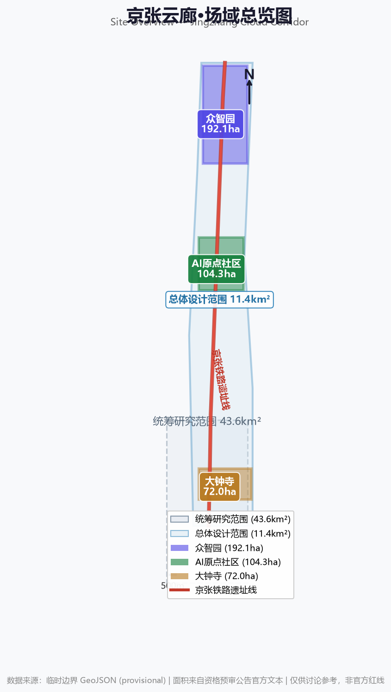
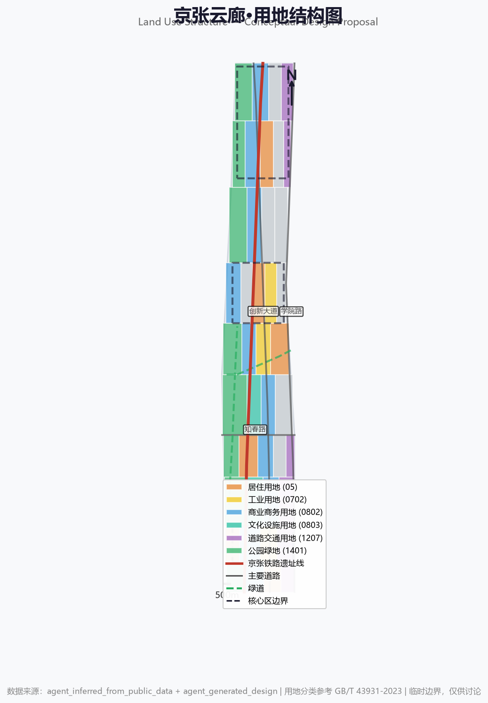
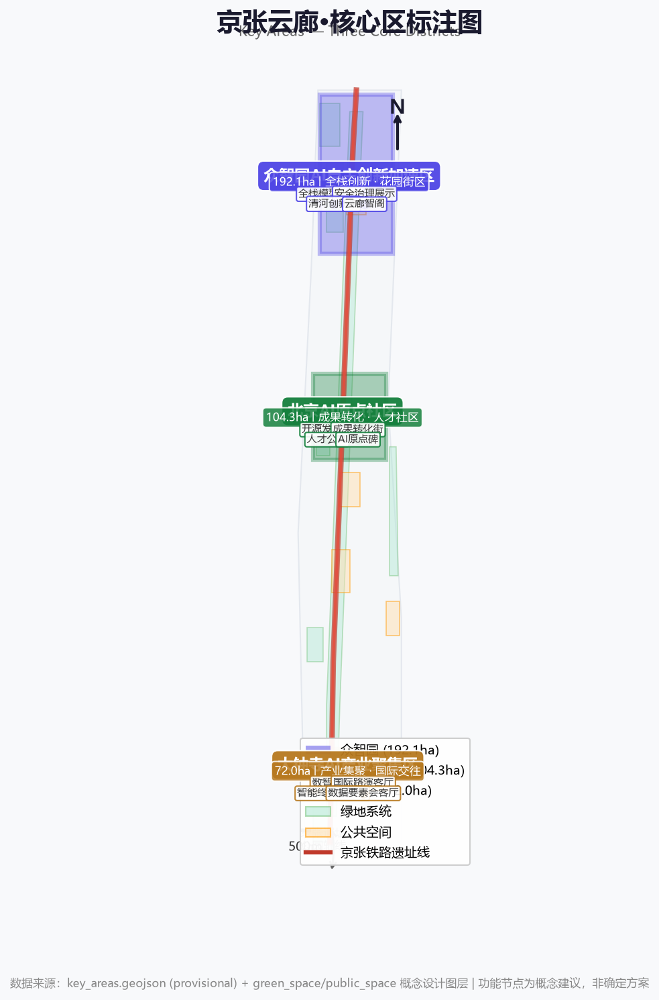
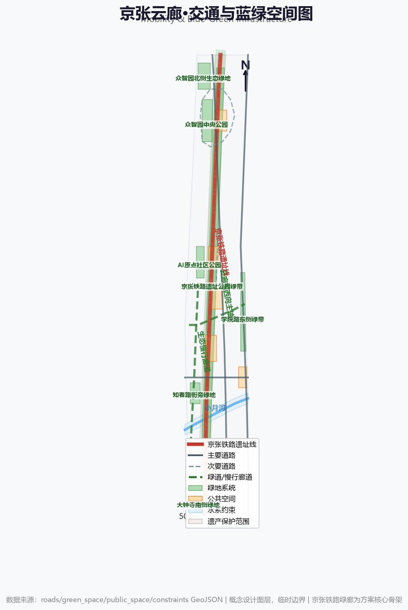
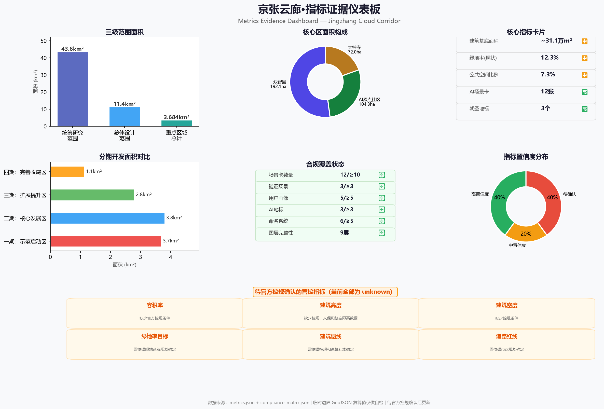

三层范围框架
方案按统筹研究范围、总体设计范围、重点区域范围递进组织，从战略研究到详细设计逐层深化。
统筹研究范围
北至北五环路，东至京藏高速，南至西直门外大街，西至万泉河路。研究AI创新生态宏观组织逻辑、三区两翼协同和区域创新网络。
总体设计范围
以京张遗址公园周边1-2公里城市地区为规划设计范围。形成城市更新总体框架、产业空间布局、交通市政支撑和城市风貌控制。
重点区域范围
自北向南：众智园(192.1ha)、AI原点社区(104.3ha)、大钟寺(72.0ha)。三处重点片区达到规划综合实施方案深度。
三个核心区
三区各有产业定位与空间策略，由京张遗址公园活力带串联为有机整体。
众智园 · 自主加速谷
192.1ha · 全栈自主创新花园型创新街区，面向清河。聚焦AI基础模型研发、自主芯片、AI安全治理标准、开源框架和低碳绿色AI。
- 全栈模型开放测试场 — 硬件在环、安全红队、性能基准
- 安全治理展示中心 — 受控沙盒环境
- 清河低碳创新廊 — 滨水公共客厅
- 云廊智阁 — 多层观景展示构筑物(概念15-20m)
AI原点社区 · 启智坊
104.3ha · 创新策源近校型成果转化与人才社区。聚焦高校成果转化、开源社区运营、初创孵化、AI人才居住与知识产权服务。
- 开源发布厅 — 模型发布与AR代码可视化
- 成果转化街 — 一站式孵化服务
- AI原点碑 — 当代里程碑(概念6-8m)
- 校区慢行网络 — 缝合高校围墙内外
大钟寺 · 数智港
72.0ha · 产业集聚城市型智能经济与国际交往街区。聚焦AI领军企业总部、智能终端、内容消费、数据要素和国际商务。
- 数智之门 — 南端入口地标(概念8-10m)
- 国际路演客厅 — 数字孪生同步参与
- 智能终端展示街 — 实景验证环境
- 站城融合 — 大钟寺站一体化
总览地图 · 场域总览
三级范围、京张铁路线路走向、三个核心区位置的空间关系总览。

图1 · 场域总览图
数据来源：临时边界 GeoJSON (provisional) | 面积来自公告官方文本用地分区结构
用地分类概念方案，参考 GB/T 43931-2023 用地分类标准。不同颜色区分不同用地类型。

图2 · 用地结构图
数据来源：agent_generated_design | 用地分类参考 GB/T 43931-2023核心区标注
三个核心区突出展示，标注各核心区名称、面积和主要功能节点。

图3 · 核心区标注图
数据来源：key_areas.geojson (provisional) | 功能节点为概念建议交通慢行与蓝绿公共空间
道路网络、绿地系统、公共空间和水系约束的复合展示。京张铁路绿廊为方案核心骨架。

图4 · 交通与蓝绿空间图
数据来源：roads/green_space/public_space/constraints GeoJSON建筑规模与更新项目
建筑基底、规模估算和更新项目清单的概念展示。
AI 场景节点
12张AI场景卡覆盖开源协作、安全治理、智慧交通、教育体验、健康服务、国际路演等维度。每个场景说明服务对象、空间位置、隐私边界和人工复核机制。
开源发布厅
原点社区核心节点。开发者开放剧场，AR代码可视化。
安全治理沙盒
众智园。红队测试、攻防演练、评测自动化。
AI慢行导航
遗址公园全线。智能导视、无障碍路径、夜间照明。
端侧算力驿站
各主要节点。边缘计算亭，实时翻译、AR导航。
国际路演客厅
大钟寺。多模态展示、实时翻译、数字孪生。
清河低碳创新廊
众智园临清河。碳足迹实时显示、雨洪花园。
成果转化街
原点社区高校周边。专利分析、技术匹配推荐。
数据要素会客厅
大钟寺。联邦学习、隐私计算、数据溯源展示。
AI+教育体验站
原点社区。自适应学习、虚拟实验室。
社区健康驿站
各核心区。健康风险评估、远程问诊辅助。
智能消费体验街区
大钟寺商业节点。无人零售、AR试穿。
全球AI活动周路线
全线。旗舰活动、黑客松、创新展览。
核心指标仪表板
从 metrics.json 提取的关键指标。置信度标注反映数据来源可靠程度。

图5 · 指标证据仪表板
数据来源：metrics.json + compliance_matrix.json + phasing.geojson任务覆盖与合规状态
公告任务和agent任务的响应性覆盖，每条任务对应到报告章节、图层、指标、图纸、来源和假设。
自检状态与数据来源
所有设计依据均来自公开或经清权的来源。关键数据缺口已在 assumptions.json 中记录。
⚠ 临时边界声明
本方案使用的空间边界为临时粗略边界(provisional)，仅供方案生成和讨论参考。待官方精确边界发布后，所有空间数据、指标和图纸均需重新计算和更新。控规指标（容积率、建筑高度、建筑密度、绿地率目标、建筑退线、道路红线）全部缺失。
数据来源
- SRC-2026-BJ-GH-QUAL-PREANNOUNCEMENT
资格预审公告 — 项目名称、范围面积、文字四至 - SRC-2026-0518-AGENT-OPEN-CALL-TASKBOOK
面向智能体任务书摘录 — 六项agent任务、共创原则 - SRC-2026-BJ-KW-THREE-AREAS-WINGS
三区两翼打造世界级AI集聚地 — 产业背景 - SRC-2026-HAIDIAN-1X1
海淀1+X+1产业体系 — AI产业定位 - SRC-PROVISIONAL-BOUNDARIES-2026
临时粗略边界 polygon — 仅供方案生成 - SRC-2023-MNR-LAND-USE-CLASSIFICATION
用地用海分类指南 — 用地分类术语
假设条件
- A-CONTROLS-002 缺少清河蓝线、防洪标准和河道管控数据
- A-OWNERSHIP-001 缺少校区边界、权属和首层业态数据
- A-MUNICIPAL-001 缺少轨道站点一体化设计和路口改造工程条件
- A-BOUNDARY-001 临时边界由公告文字四至推导，可能与实际官方边界存在偏差
- A-FLOOR-AREA-001 缺少控规条件，无法进行可靠的总建筑面积估算
- A-HERITAGE-001 文保控制线具体界线未提供
⚠ 声明
本方案为AI Agent生成概念方案，仅供讨论参考。所有内容均为开放共创建议，不替代专业规划，不构成政府审定结论。方案中所有空间落地建议表述为"概念建议""参考方案"或"可供专业团队深化研究"。本方案不声称官方批准、审定控规、最终土地权属、最终建设规模或保证实施。本方案遵循面向智能体任务书的十项共创原则：公共利益优先、公开资料边界、概念建议属性、AI原生创新、结构化与可读并重、生成方法披露、人类最终判断、公共知识沉淀、贡献可记忆、人本治理。